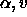
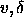

The programme <kslice_3d> is the Karma version of an idea of François Viallefond (a program called 3view). Also GIPSY has an implementation of something very similar. Because Karma is much more designed for this kind of work, <kslice_3d> is much faster than the other two versions.
The program shows 3 images in a window, being the data cube sliced along the principle planes. The top left image is a XY image (so for a radio cube this would be a channel), the bottom image is XZ (so normally ) and the top right ZY (). With the mouse one can interactively change the planes that are shown. If the mouse is in the XY image, the other two images are the XZ and the ZY image corresponding the the (x,y) position of the cursor. Alternatively, if the mouse is in one of the two other images, the XY image shown is the image corresponding to the Z-coordinate of the mouse.
<kslice_3d> is fast enough (contrary to 3view and GIPSY) that if you move the mouse while keeping the left button pressed, the images are updated real time.
Note that the volume rendering programme xray will automatically display a <kslice_3d> window so that you can slice through the cube as well as volume render it.
There are only a few buttons in <kslice_3d>:
If a cube is loaded, the images to display are not computed automatically. If next you move the mouse, <kslice_3d> will have to compute the image that is has to display in real time. This makes things a bit slow sometimes. Clicking Precompute will make <kslice_3d> compute all the images it can display. This takes a few seconds, but it makes the update of the images very fast.
Note that to run smoothly, <kslice_3d> requires quite a bit of memory, certainly if you expand the images. If this gives problems, try running it sitting in front of phoenix. Note that the memory requirement is on the machine you are sitting in front of, not the machine that you are running the programme on (although for best performance they should be the same).
There are three sliders that control the size of the three images. If you expand too much, <kslice_3d> will not display anything (i.e. you will see a blank window). Just reduce your expansion factor appropriately until the display re-appears.
If you want to make the images larger than the window would allow, you can resize the window (drag on the bottom right corner) and after this increase the magnifications.